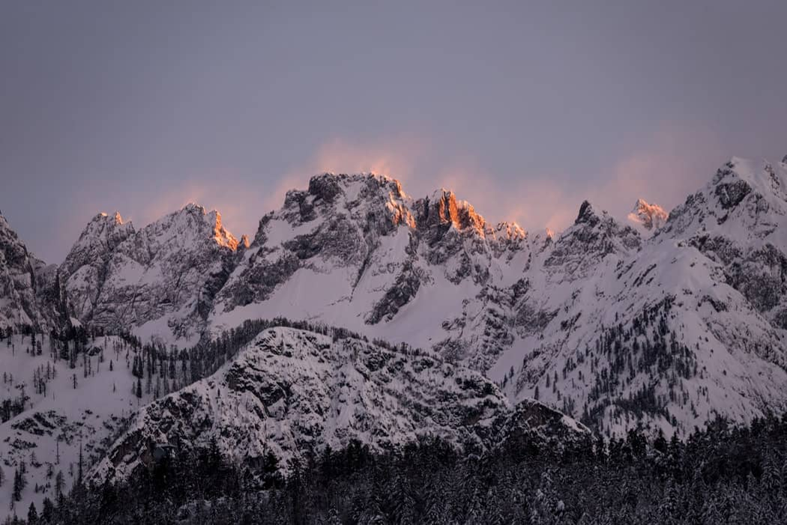
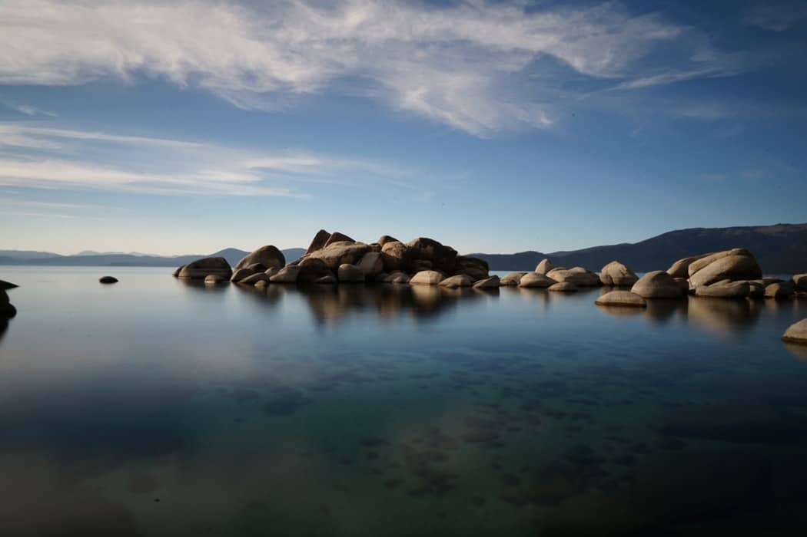
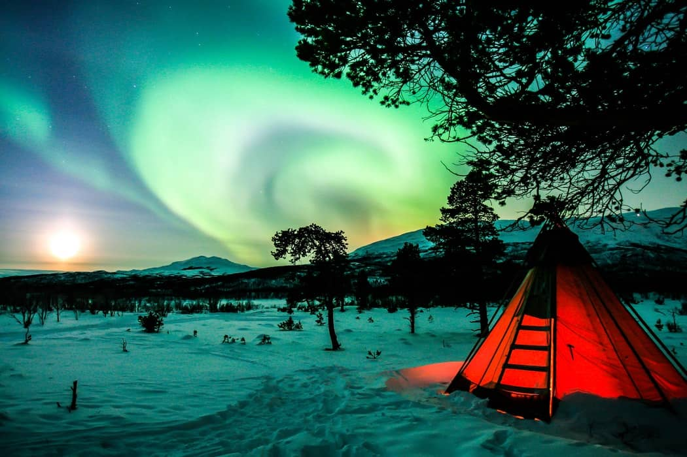
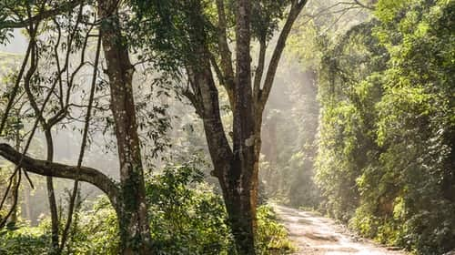
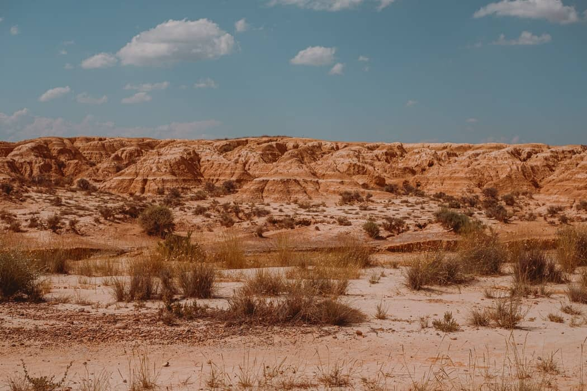

Not to conquer, but to share the view
Photographers are artists with the camera, using a blend of technical skills and an artistic eye
to
take pictures of people, places, landscapes, food, you name it. Photographers can work as fine
artists, wedding and event photographers, or sell their photos to commercial clients.
Photography is the art, application, and practice of creating durable images by recording light,
either electronically by means of an image sensor, or chemically by means of a light-sensitive
material such as photographic film. It is employed in many fields of science, manufacturing
(e.g.,
photolithography), and business, as well as its more direct uses for art, film and video
production,
recreational purposes, hobby, and mass communication.
Typically, a lens is used to focus the light reflected or emitted from objects into a real image
on
the light-sensitive surface inside a camera during a timed exposure. With an electronic image
sensor, this produces an electrical charge at each pixel, which is electronically processed and
stored in a digital image file for subsequent display or processing. The result with
photographic
emulsion is an invisible latent image, which is later chemically "developed" into a visible
image,
either negative or positive depending on the purpose of the photographic material and the method
of
processing. A negative image on film is traditionally used to photographically create a positive
image on a paper base, known as a print, either by using an enlarger or by contact printing.

Clear minds, full hearts, can't lose!
With over 100 million lakes around the world, there are so many bodies of water for us to capture.
Lakes are scattered all over the planet and come in different shapes, sizes, and colors. With our
Fotorians about to start the lake photography mission.
For excellent quality lake scenes, photographers always go out in the early morning to capture the
sunrise, they may even stay out late and finally the way for the sun to set. In advance, it’s good
to get a predetermined location picked out, so you know where to setup and what scenery to expect.

No light. no light, in your bright blue eyes
If you want to photograph the Northern Lights, a good starting point is: aperture f/2.8 or the widest
possible in your lens, ISO 3200-6400, and a shutter speed between 1-15 seconds depending on the
Northern Lights activity. The quicker the Aurora moves, the faster your shutter speed should be.
However, photographing the Northern Lights goes beyond adjusting a few settings.
I still remember
how excited I was before my first Northern Lights trip and how challenging it turned out to capture
the Aurora Borealis.
If you want to learn how to photograph the Northern Lights and skip the tedious trial and error,
keep reading. I’ve prepared this Northern Lights guide where you’ll find the best way to photograph
the Northern Lights like an expert!

It's no use going back to yesterday, because I was a different person then.
Landscape photography is often associated with the Grand Landscape and the famous vistas. I love a
beautiful sunset from a vantage point with impressive mountains in the background just as much as
anyone, and I have several times traveled across the globe to find such a scene and capture it.
However, one of the problems with this kind of photography is: you sometimes have to travel across
the globe to find a scene and capture it! And when you do, you will probably find that you are not
alone on location and the scene has been photographed so many times before that you will have a hard
time separating your own masterwork from thousands of others.
I am not saying that there aren’t any grand vistas out there that you can discover and make your
own, but you get the idea. Most of us do not live close to countless undiscovered, fabulous
viewpoints and many of the famous, grand landscapes have been so much photographed that making
something new can be difficult.

In the desert, you can't remember your name
Desert photography is similar to landscape photography. You have to pack the equipment you are sure
you will need.Many desert plant species have adapted defensive mechanisms in the form of needles. In
some locations, the ground is littered with them. Camera care is important, and setting your bag on
the ground or in the sand can create problems later. It is better to place it on the garbage bag.
Wondering what lens you’ll need is a valid question. My opinion is, “whatever you can carry.” If you
need to keep weight in check, limit your lens choice to fewer lenses with greater coverage. I carry
a 16-35mm, 28-70mm, and 80-200mm as my three main lenses and they all get used.
The desert landscape consists of endless sand and sky. It’s natural to want to capture it all in one
frame with a wide-angle lens. While there are plenty of subjects where this lens is a perfect
choice, consider using a telephoto lens as well.
Remember, a wide-angle lens makes the foreground appear larger. A telephoto brings the distant
background closer to the viewer by zooming in.